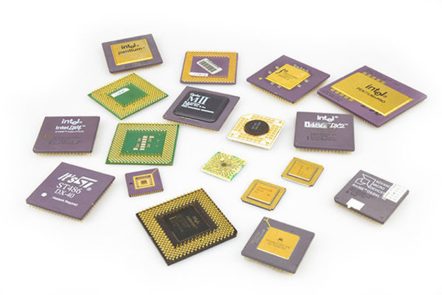
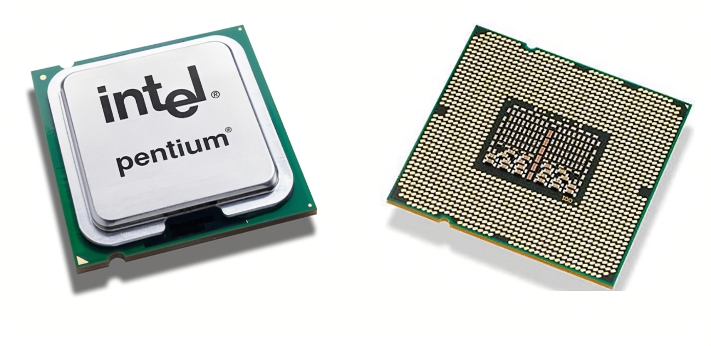

- Intel
- AMD
- VIA
- Atom
- Celeron
- Pentium

- Procesadores de un núcleo
- Procesadores de dos núcleos
- Procesadores de cuatro núcleos
- Procesadores de más de cuatro núcleos
| Los Tipos de Microprocesadores |
|
 |
| Clasificación de Microprocesadores |
|
|
| Tipo de Núcleos de los Microprocesadores |
|
 |